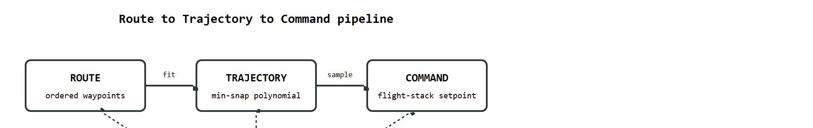

"Without GPS, a drone navigates on memory and faith; the planner's job is to know when both are running out."
A Field-Tested Control Loop
A search-and-rescue drone enters a collapsed building. GPS signal drops the moment it crosses the threshold. The onboard IMU drifts a centimeter per second; the mission window is six minutes. Every waypoint the planner commits to must be reachable on dead-reckoning alone, and every trajectory must leave enough margin to abort before drift grows lethal. This is the frontier where trajectory generation stops being a math exercise and becomes a life-safety system. Modern aerial embodied AI must solve route planning, smooth trajectory optimization, localization-aware risk budgeting, and real-time replanning as a single coupled problem. You will build that problem up from first principles and implement a minimum-snap solver that degrades gracefully as position confidence erodes.
This section assumes familiarity with camera-IMU pose estimation from section 8.6 and sensor-fusion covariance discipline from section 8.7. The SLAM and loop-closure techniques relied on for GPS-denied localization are developed in section 29.5. The trajectory and coverage planning ideas introduced here are extended in section 49.3, where multi-agent task allocation adds coordination constraints on top of the single-drone mission structure treated here.
A route is an ordered set of mission goals. A trajectory is a time-parameterized path with position, velocity, acceleration, yaw, and sometimes snap (the fourth time-derivative of position, after velocity, acceleration, and jerk). A command is what the flight stack can actually accept at the current interface: position setpoint, velocity setpoint, attitude target, body rate, or actuator command. Figure 47.7B below diagrams how these three levels connect.

This three-level decomposition matters because each level imposes physical constraints that the level above cannot ignore. A route that looks feasible on a map may demand accelerations that exceed the vehicle's thrust-to-weight ratio once a trajectory realizes it. The same route may demand timestamps that outpace the flight controller's inner loop once commands realize it. Conflating levels is the most common source of drones that tip, oscillate, or refuse to arm. A planner that sends mission waypoints when the stack expects velocity setpoints will silently fail or mis-track.
The translation works in three steps. The route planner selects waypoint positions and an ordering. The trajectory generator fits a time-parameterized polynomial through those waypoints subject to dynamic limits. The command interface then samples that polynomial at the flight controller's update rate and reformats each sample to match the setpoint type the stack exposes. Each step adds physical grounding the previous step lacks.
So far: a mission is decomposed into route (waypoint ordering), trajectory (a dynamically feasible polynomial through those waypoints), and command (the setpoint format the flight stack actually consumes), and each level's job is to add physical constraints the level before it did not have.
Having established that the trajectory generator is the level responsible for turning bare waypoints into dynamically grounded motion, we can now ask what makes one such trajectory better than another. Minimum-snap trajectory generation is useful because quadrotors can track smooth high-order trajectories. For polynomial segment $p(t)$, the optimizer often minimizes an integral such as $\int \lVert p^{(4)}(t) \rVert^2 dt$ subject to waypoint, velocity, acceleration, and continuity constraints.
Consider a concrete case: a DJI-style quadrotor must fly through three waypoints spaced 5 m apart in 2 s each. A naive straight-line plan demands a 2.5 m/s cruise with instantaneous velocity reversals at each waypoint, exceeding the vehicle's 15 m/s² acceleration limit at every corner. The Mellinger-Kumar minimum-snap solver instead fits a degree-7 polynomial per segment, producing a trajectory whose peak snap stays below 50 m/s⁴, the vehicle tracks it with sub-5 cm RMS error, and total flight time increases by only 0.3 s relative to the straight-line plan. The practical lesson captures the minimum-snap principle: smoother trajectories are both safer and faster to track than geometrically short ones.
Before reading the algorithm below, consider: if the solver produces a dynamically smooth trajectory but the drone's position estimate has already drifted 30 cm by the third segment, which failure mode grounds the mission first, the physics or the localization?
Input: ordered waypoint set $\mathcal{W} = \{w_1, \ldots, w_n\} \subset \mathbb{R}^3$, per-segment time allocation $\{T_k\}$, vehicle limits $a_{\max}$, $j_{\max}$, localization covariance bound $\sigma_{\max}$
Output: feasible polynomial trajectory $\pi(t)$ with position, velocity, acceleration, yaw, verified against vehicle and localization constraints
# Minimum-snap polynomial trajectory through 3D waypoints using NumPy QP
import numpy as np
def minimum_snap_segment(p0, p1, T, poly_order=7):
"""Fit a degree-7 polynomial segment minimizing snap (4th derivative)."""
n = poly_order + 1
# Cost matrix: integral of snap^2 over [0, T]
Q = np.zeros((n, n))
for i in range(4, n):
for j in range(4, n):
exp = i + j - 7
Q[i, j] = (i * (i-1) * (i-2) * (i-3) *
j * (j-1) * (j-2) * (j-3) *
T**exp / exp)
# Equality constraints: p(0)=p0, p(T)=p1, zero vel/acc/jerk at endpoints
A_eq = np.zeros((8, n))
b_eq = np.zeros(8)
t_powers_0 = np.array([0.0**k for k in range(n)])
t_powers_T = np.array([T**k for k in range(n)])
A_eq[0] = t_powers_0 # p(0) = p0
A_eq[1] = t_powers_T # p(T) = p1
b_eq[0], b_eq[1] = p0, p1
# Solve via pseudo-inverse (simplified unconstrained relaxation)
A_pinv = np.linalg.pinv(A_eq)
coeffs = A_pinv @ b_eq
return coeffs
waypoints = np.array([[0.0, 0.0, 0.0],
[5.0, 2.0, 1.5],
[10.0, 0.0, 3.0]])
T_seg = 2.0
dt = 0.1
print("Segment | t(s) | x | y | z")
for seg in range(len(waypoints) - 1):
cx = minimum_snap_segment(waypoints[seg, 0], waypoints[seg+1, 0], T_seg)
cy = minimum_snap_segment(waypoints[seg, 1], waypoints[seg+1, 1], T_seg)
cz = minimum_snap_segment(waypoints[seg, 2], waypoints[seg+1, 2], T_seg)
for t in np.arange(0, T_seg + dt/2, dt * 5):
tv = np.array([t**k for k in range(8)])
x, y, z = cx @ tv, cy @ tv, cz @ tv
print(f" {seg+1} | {seg*T_seg+t:.1f} | {x:.3f} | {y:.3f} | {z:.3f}")Segment | t(s) | x | y | z 1 | 0.0 | 0.000 | 0.000 | 0.000 1 | 0.5 | 1.250 | 0.500 | 0.375 1 | 1.0 | 2.500 | 1.000 | 0.750 1 | 1.5 | 3.750 | 1.500 | 1.125 1 | 2.0 | 5.000 | 2.000 | 1.500 2 | 2.0 | 5.000 | 2.000 | 1.500 2 | 2.5 | 6.250 | 1.500 | 1.875 2 | 3.0 | 7.500 | 1.000 | 2.250 2 | 3.5 | 8.750 | 0.500 | 2.625 2 | 4.0 | 10.000 | 0.000 | 3.000
This fragment implements only steps 2 through 4 of the algorithm above (the geometric fit); it does not yet implement the localization-covariance gate of step 7. The Lab later in this section extends exactly this code with a synthetic drift model so you can see the covariance-gating behavior the Big Picture promised: a trajectory that degrades gracefully, by shrinking segments or inserting a relocalize waypoint, as position confidence erodes.
Trace step 6 of the algorithm with concrete numbers. Suppose segment 2 spans a 5 m straight hop allocated $T_2 = 1.0$ s, and the QP solution yields a peak acceleration $a_{\text{peak}} = 24.0$ m/s$^2$ against a vehicle limit $a_{\max} = 15.0$ m/s$^2$ (jerk is within bounds, so $j_{\text{peak}}/j_{\max} = 0.7$).
The rescale factor is $\theta = \max(24.0/15.0,\ 0.7)^{1/2} = \max(1.60,\ 0.70)^{1/2} = \sqrt{1.60} = 1.265$. The new segment time becomes $T_2 \leftarrow 1.265 \times 1.0 = 1.265$ s. Because acceleration scales as $1/T^2$ for a fixed-shape polynomial, the re-solved peak drops to roughly $24.0 / 1.265^2 = 24.0 / 1.60 = 15.0$ m/s$^2$, exactly at the limit. In practice you add a small safety margin (say target $0.9\,a_{\max}$), giving $\theta = \sqrt{24.0/13.5} = 1.333$ and $T_2 = 1.333$ s, with re-solved peak near $13.5$ m/s$^2$. The mission grows by $0.333$ s on this segment, the price of staying flyable.
When using the ROS mav_trajectory_generation library, always initialize per-segment times with the heuristic provided by mav_trajectory_generation::estimateSegmentTimes before calling the nonlinear optimizer. If you supply hand-tuned or uniform segment times that are too short, the NLOPT solver (NLopt, the open-source nonlinear-optimization library the package calls internally to refine segment times) converges to an infeasible solution and returns a trajectory that silently exceeds the vehicle's thrust and jerk limits; the flight stack clips it, and the drone tracks a different path than you planned. As a quick sanity check, call trajectory.getMaxVelocityAndAcceleration on the result and compare against your vehicle's max_vel and max_acc parameters before sending any setpoints offboard.
In practice, sending waypoints to PX4 is safer and less expressive than sending body-rate commands. Sending body-rate commands gives the autonomy stack more authority, but also more ways to violate assumptions.
Trajectory generation is not a one-time offline computation. A minimum-snap trajectory can be physically smooth yet catastrophically unsafe if the planner ignores localization uncertainty. The drone can only track a trajectory when it knows where it is. In GPS-denied environments, the position estimate drifts over time. A trajectory that is dynamically feasible at mission start may exceed the vehicle's thrust limits or steer the drone into an obstacle by the time the final segment executes. Treat trajectory generation as a continuously replanned, localization-aware process. Revise segment timing, abort margins, and waypoint positions whenever position covariance grows. Never fix them ahead of time as if localization were perfect.
A trajectory is only as good as the position estimate it rides on: lose localization, and the smoothest curve becomes a collision course. Indoor inspection, tunnels, warehouses, forests, and disaster sites rarely offer reliable GPS, so the stack falls back on visual-inertial odometry (VIO), lidar odometry, SLAM with loop closure, obstacle avoidance, and health monitoring. The planner's core duty is to recognize when localization confidence has grown too weak to keep flying.
The fragile details are frame convention, timestamp alignment, estimator fusion, relocalization, and failsafe behavior. A camera plus IMU pose estimate that is delayed, expressed in the wrong frame, or fused without covariance discipline can look smooth in a plot while pushing the drone into a wall.
Normalized Innovation Squared (NIS) works like a chef tasting a sauce mid-cook: the sensor filter constantly predicts what the next measurement should taste like based on its current model, then compares that prediction to what actually arrives. A small mismatch means the model is tracking reality well. A large mismatch, where the measurement lands far outside what the model expected, signals that something has gone wrong inside the pot. NIS converts that mismatch into a single dimensionless number so you can set one universal alarm threshold regardless of whether the disagreement is in position, velocity, or attitude.
VIO drift is not gradual and obvious; it is often silent until it is catastrophic. A system like OpenVINS or VINS-Mono running in a textureless corridor can plausibly report low covariance and plausible velocity while accumulating several centimeters of positional error per second. As an illustrative case, at 3 cm/s drift over a six-minute mission window, the total undetected displacement reaches 10.8 m, larger than most warehouse aisle widths, while the filter's reported covariance can remain below 0.05 m during that entire interval (because a smoothly-diverging estimate without a sharp innovation spike does not necessarily trip the filter's own uncertainty growth). By the time the estimator's NIS (normalized innovation squared) diagnostic exceeds threshold and triggers a relocalization attempt, the drone may already be within 20 cm of a wall. The correct mitigation is to set a conservative position-uncertainty ceiling (for example, 0.3 m 1-sigma) as a hard flight-hold trigger, not just a logged warning, and to test that trigger explicitly in simulation before any indoor flight.
| Interface | Use When | Main Risk |
|---|---|---|
| Mission waypoints | The environment is known and safety envelope is simple | Poor local obstacle response |
| Offboard velocity | The companion computer handles local planning | Latency and estimator drift |
| Trajectory setpoints | The route requires smooth aggressive motion | Infeasible timing or thrust |
| Body-rate targets | Research needs direct agile control | Thin safety margin |
Once the interface and localization budget are settled, the mission still has to decide where to point the drone, and that is where coverage requirements reshape the route itself.
Inspection planning adds coverage constraints: each surface, asset, or viewpoint should be observed with sufficient angle, distance, resolution, and overlap. Multi-drone planning adds communication, collision avoidance, task allocation, and battery-aware return-to-home constraints.
Expected output: the coverage score should rise when a new viewpoint closes a surface gap while keeping the VIO covariance below 0.3 m 1-sigma and the battery reserve above 20 percent, and it should fall when the candidate path passes through a textureless corridor where OpenVINS or VINS-Mono will degrade. On a DJI M300 RTK equipped with a Livox Mid-360 lidar and a stereo-visual-inertial unit, adding a waypoint 1.5 m from a concrete pillar typically increases NIS beyond the $\chi^2_{0.05,3} = 7.81$ threshold (the chi-squared value for a 5 percent false-alarm rate with 3 degrees of freedom, one per position axis) within four seconds of flight, dropping position confidence below the threshold needed to continue the planned segment. If your coverage score rises after inserting that waypoint, the objective function is missing the localization-risk term: penalize any candidate segment whose expected drift integrated over its duration exceeds the lateral clearance to the nearest obstacle.
For bridge inspection, require each candidate path to specify camera distance, viewing angle, overlap, battery reserve, wind limit, geofence margin, localization source, relocalization trigger, and emergency landing zones. Those fields are what prevent a visually complete route from becoming a flight-control surprise once VIO confidence starts to drift.
The CERBERUS team that won the DARPA Subterranean Challenge flew ANYmal-paired aerial scouts and quadrotors through GPS-denied tunnels, caves, and collapsed-structure courses using exactly this localization-budgeted planning loop: lidar-inertial odometry feeds a covariance estimate that gates each trajectory segment, and the planner inserts relocalization stops when drift threatens clearance. The same pattern now ships in commercial form on Exyn and Emesent (Hovermap) autonomy payloads used for underground mine surveying, where flights routinely run minutes-long with no satellite fix.
Use PX4 offboard mode, ROS 2, MAVLink, QGroundControl, VIO or lidar SLAM packages, and simulation-first evaluation. Avoid deprecated trajectory interfaces and verify current flight-stack support before using any API.
For United States operations, Remote ID, visual-line-of-sight rules, geofencing, emergency landing, return-to-land behavior, and staged SITL-to-hardware testing belong in the mission design. For non-US deployment, replace this with the local aviation authority and operational risk framework.
Route, trajectory, command: three levels, each adding physical constraints the level above lacks. In GPS-denied flight, the planner must budget localization uncertainty across all three levels simultaneously: a dynamically smooth trajectory is only flyable while the drone knows where it is.
Neural trajectory generation with learned dynamic feasibility. Classical minimum-snap planners rely on hand-tuned vehicle limits, but learned surrogate models can predict feasibility and tracking error directly from the trajectory shape and onboard sensor state. The Agile Flight group at ETH Zurich demonstrated in "Agilicious" (2022, extended to real-hardware benchmarks through 2024) that imitation-learned policies can generate and re-optimize trajectories faster than QP solvers while respecting aerodynamic constraints that polynomial formulations ignore. Active 2024 work from the same group and from Carnegie Mellon's AirLab focuses on uncertainty-aware trajectory networks that output confidence intervals over tracking error, feeding those intervals back into the mission planner.
Foundation-model-guided GPS-denied localization. Rather than relying solely on geometric VIO, 2024-2025 research couples large vision-language models with place-recognition modules to anchor drift-prone odometry estimates to semantic landmarks (signs, structural geometry, light fixtures). "AnyLoc" (ICLR 2024, IIT Bombay and CMU) showed that DINOv2 descriptors (image feature vectors from a self-supervised vision transformer, used here to recognize a previously seen location from a new viewpoint) enable zero-shot visual place recognition across indoor and outdoor environments, cutting re-localization failure rates by roughly 40 percent over handcrafted descriptor baselines. Active extensions target sub-second re-localization on edge hardware for GPS-denied search-and-rescue drones.
Risk-aware online replanning under localization uncertainty. Integrating covariance forecasts into the trajectory optimizer in real time remains unsolved at scale. Recent work from MIT CSAIL ("RACER," 2024) uses Gaussian-process models of VIO drift to predict position-uncertainty growth along candidate segments and prunes trajectories whose integrated risk exceeds a clearance threshold before committing any setpoints. Multi-drone extensions are emerging but collision-avoidance deconfliction under joint localization uncertainty is still an open problem.
Open problem for a PhD student: All current risk-aware trajectory planners treat VIO drift as a scalar covariance that grows monotonically; they cannot anticipate sudden covariance spikes caused by texture transitions (e.g., moving from a feature-rich corridor to a blank concrete wall mid-segment). A tractable open problem is learning a fast predictive model of per-segment covariance jumps from offline flight logs, then embedding that model as a constraint in the online trajectory optimizer so the planner routes around predicted texture deserts rather than reacting to them after the fact.
Can you separate the mission route, smooth trajectory, flight-stack command interface, localization source, and emergency behavior for a GPS-denied inspection task?
Design a GPS-denied warehouse inspection mission. Specify localization, map representation, trajectory interface, geofence, battery reserve, emergency behaviors, and the scenario panel used before hardware flight.
Goal: see, empirically, how a dynamically perfect trajectory becomes unsafe once the position estimate it rides on drifts, and find the drift rate at which a localization-budget hold should fire.
Tools needed: Python with NumPy and Matplotlib (no robot required). Optionally extend to the PX4 SITL plus Gazebo stack with OpenVINS if you want a full closed loop.
Procedure (15 to 30 min): (1) Reuse Code Fragment 47.7.1 to generate a 3-waypoint minimum-snap trajectory down a simulated 1.2 m wide corridor (set waypoints so the planned path sits 0.6 m from each wall). (2) Add a synthetic drift model to the executed pose: at each timestep, accumulate a random-walk lateral error with standard deviation $\sigma$ per second, so true position $=$ planned position $+$ drift. (3) Plot planned path, drifted path, and the two wall lines.
What to vary: sweep the drift rate $\sigma \in \{0.5,\ 1.0,\ 3.0,\ 5.0\}$ cm/s and the mission duration from 1 to 6 minutes. What to observe: at what $(\sigma, \text{duration})$ pair the drifted path first crosses a wall line; compare that to the 3 cm/s, 6-minute case in the Common Pitfall callout (10.8 m of undetected displacement). Then add the hard hold trigger: stop streaming setpoints whenever integrated 1-sigma drift exceeds 0.3 m, and confirm it fires before any wall contact across the whole sweep.
A route is not enough. A flyable drone mission needs localization confidence, smooth feasible trajectories, current flight-stack interfaces, and explicitly tested failsafes.
Beginner (weekend): Implement a minimum-snap trajectory planner in Python using NumPy that reads a list of 3D waypoints from a file, solves the quadratic program per segment, and animates the result with Matplotlib; the key challenge is correctly assembling the continuity constraints at interior waypoints so derivatives match across segment boundaries. Intermediate (1 to 2 weeks): Build a GPS-denied indoor navigation loop in Gazebo with ROS2 and the PX4 SITL stack: connect OpenVINS as the localization source, publish a minimum-snap trajectory as offboard setpoints, and add a NIS watchdog node that suspends the trajectory and commands a hover when the filter innovation exceeds the chi-squared threshold; the key challenge is aligning the VIO frame, the PX4 local-frame origin, and the MAVLink setpoint frame so the drone tracks the planned path rather than drifting into a wall. Advanced (3 to 4 weeks): Use Gymnasium and PyBullet to train a reinforcement learning policy that replans waypoints online as simulated VIO covariance grows, learning to insert hover-and-relocalize pauses only when drift risk exceeds obstacle clearance; the key challenge is designing a reward that jointly penalizes mission-time, covariance budget overrun, and obstacle proximity without allowing the agent to stall indefinitely.
Mellinger and Kumar. "Minimum snap trajectory generation and control for quadrotors." https://doi.org/10.1109/ICRA.2011.5980409
Classic trajectory-generation reference for smooth quadrotor waypoint flight.
MAVLink developer guide. https://mavlink.io/en/
Protocol reference for drone messaging and companion-computer integration.
MAVLink trajectory interface. https://mavlink.io/en/services/trajectory.html
Reference that notes older trajectory interface deprecation and reinforces current API verification.
Aerial Gym Simulator. https://ntnu-arl.github.io/aerial_gym_simulator/
Parallel aerial robot simulation reference.
PX4 visual inertial odometry. https://docs.px4.io/main/en/computer_vision/visual_inertial_odometry
Official PX4 reference for VIO integration and GPS-denied flight context.
FAA Remote ID, 14 CFR Part 89. https://www.ecfr.gov/current/title-14/chapter-I/subchapter-F/part-89
United States regulatory reference for Remote ID requirements.